Справочник по Angular и React · модуль 4 · работа с ИИ-агентом и обзор Angular
4.4
Angular: тот же компонент
В этой главе страница «Сайты» из «Мониторинга сайтов группы» переписывается на Angular 22. Новый проект создаётся командой ng new, данные загружает служба, страница строится на сигналах, заголовки вкладок задаются в маршрутах, а тест запускается тем же Vitest, что в главе 4.1. Каждая часть ставится рядом со своей версией на React. В конце — что получилось по числам: строки кода, размер сборки и папки node_modules.
- Категория
- Angular, сигналы, службы, сравнение с React
- Уровень
- Начальный
- Что понадобится
- Проект
monitoringпосле главы 4.3, Node.js 24, 300 МБ на диске - Результат
- Проект
monitoring-ng: страница «Сайты» с поиском и флажком, страница сайта, 4 теста, сборка 254 КБ
§1Что переносим
РазбираемсяОдна задача на двух фреймворках
Один и тот же рецепт борща можно приготовить на газовой плите и на индукционной. Продукты, порядок и вкус те же. Меняются посуда, ручки и привычки: индукция не греет алюминиевую кастрюлю, а газ не выключается сам.
Рецепт интерфейса — данные, правила подсчёта и разметка. Фреймворк — плита. Часть посуды переносится без изменений, часть приходится заменить.
В главе 0.2 React и Angular сравнивались на маленьком поиске по городам. Здесь сравнение идёт на настоящей странице: со сводкой, карточками-ссылками, поиском и флажком из главы 4.3, загрузкой данных из файлов, заголовком вкладки и тестом. В таблице — что есть в React-версии и чем это станет в Angular.
| Часть | React (monitoring) | Angular (monitoring-ng) |
|---|---|---|
Типы, statusText, sitesWord | types.ts, status.ts, plural.ts | те же файлы без изменений |
| Загрузка данных | MonitoringProvider: useEffect, четыре состояния, контекст | служба Monitoring с двумя httpResource |
| Состояние страницы | useState | signal |
| Сводка, список показанных | переменные, которые считаются при каждой отрисовке | computed |
| Разметка | JSX, map, &&, ранний return | шаблон: @if, @for, @else |
| Ссылка-карточка | <Link to> | <a [routerLink]> |
| Заголовок вкладки | <title> в компоненте | title в маршруте |
| Тест | Vitest, Testing Library, MonitoringContext | Vitest, TestBed, подмена службы |
Верхняя строка таблицы — самая короткая. Функции, которые не обращаются к React, переносятся копированием файла. Остальные строки — то, ради чего глава: у каждой части React есть своя часть в Angular, но устроена она иначе.
Начнём с проекта: в Angular его создаёт собственная программа.
§2Новый проект
РазбираемсяAngular CLI
Проект на React создавался командой Vite, и набор библиотек — маршрутизатор, тесты, линтер — добавлялся по мере надобности. Проект на Angular создаёт Angular CLI — программа командной строки от команды Angular, команда ng. Она сразу ставит маршрутизатор, модуль работы с сетью, формы и тесты и задаёт структуру папок. Версия CLI совпадает с версией Angular: в ноябре 2026 года это 22.2.
ДелаемСоздаём monitoring-ng
- Создайте проект
Откройте в терминале папку, где лежит
monitoring, и выполните команду. Новый проект появится рядом, в папкеmonitoring-ng.Терминал · папка с проектами npx @angular/cli@22.2.7 new monitoring-ng --defaults --style=css --ssr=false --ai-config=open-ai-codex
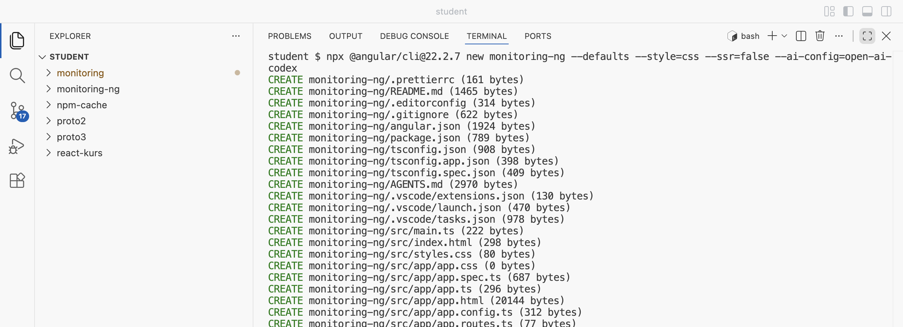
ng new создал проект и репозиторий --defaultsпринимает ответы по умолчанию на вопросы CLI.--style=css— стили на обычном CSS.--ssr=falseотказывается от отрисовки на сервере: монитор — статический сайт для GitHub Pages.--ai-config=open-ai-codexдобавляет в проект файлAGENTS.md, о нём ниже. Установка пакетов занимает около минуты, в конце CLI сам создаёт репозиторий Git с первым коммитом.При первом запуске CLI может спросить, разрешаете ли вы отправлять анонимную статистику (Would you like to share pseudonymous usage data). Ответьте N: на работу это не влияет.
- Откройте проект
Откройте папку
monitoring-ngв VS Code и файлsrc/app/app.ts.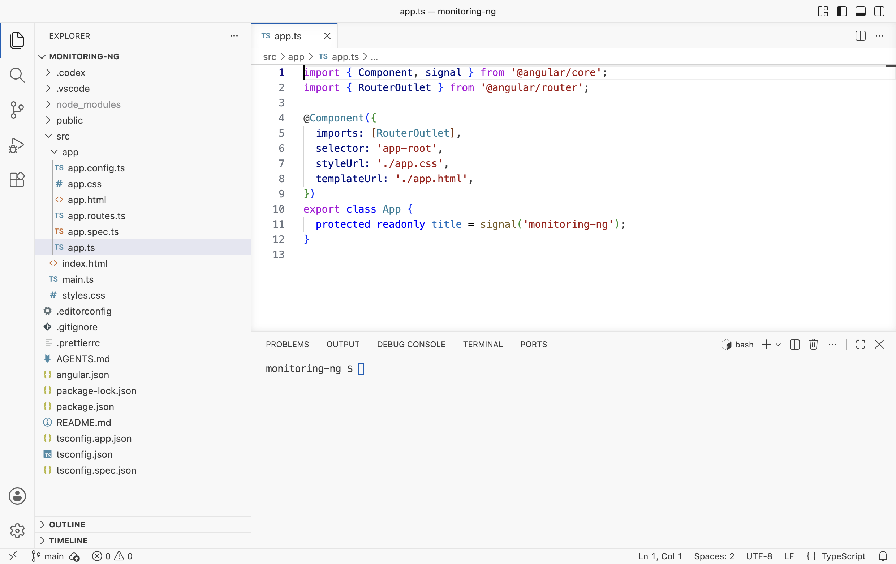
Корневой компонент, созданный CLI
РазбираемсяЧто создал CLI
app.ts — корневой компонент. Компонент Angular — это класс с декоратором @Component, функцией-пометкой перед классом. В декораторе записаны имя тега (selector), шаблон и стили, а в imports — чем пользуется шаблон. Рядом лежат app.config.ts (настройки приложения), app.routes.ts (маршруты), app.spec.ts (тест) и main.ts, который запускает приложение — как main.tsx в проекте Vite.
Много лет обязательной частью Angular была библиотека zone.js. В package.json нового проекта её нет: Angular следит за изменениями через сигналы и обходится без неё. Тесты по умолчанию идут на Vitest с jsdom, как в главе 4.1.
- Откройте AGENTS.md
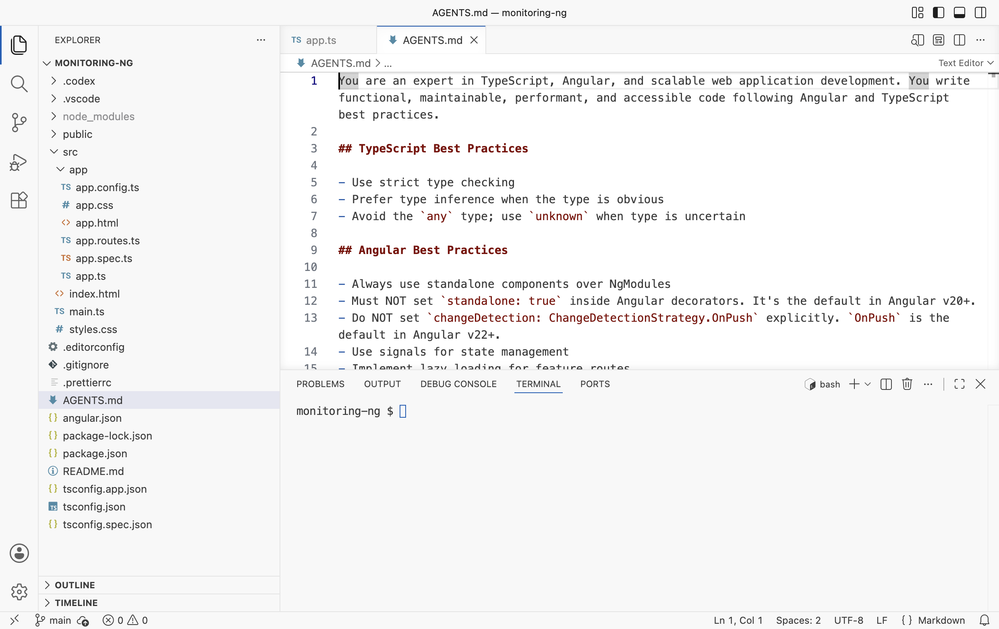
AGENTS.md от команды Angular Это файл правил для ИИ-агента, как
AGENTS.mdиз главы 4.3, только написан он командой Angular. В нём лучшие приёмы для текущей версии: сигналы иcomputedдля состояния,@ifи@forв шаблонах,inject()вместо параметров конструктора, требования доступности WCAG AA. Агент, который работает в этом проекте, получит правила до первого запроса. Код ниже написан по ним.
Проект готов. Первое, что переносится, — то, что от фреймворка не зависит.
§3Что переносится без изменений
ДелаемКопируем общие файлы
- Функции и типы
Скопируйте
types.ts,status.tsиplural.tsизmonitoring/srcвmonitoring-ng/src/app. - Данные
Скопируйте папку
monitoring/public/dataвmonitoring-ng/public: файлы изpublicCLI отдаёт как есть, как и Vite. - Стили
Замените содержимое
src/styles.cssсодержимымmonitoring/src/index.css. Классы в шаблонах будут те же, и страница будет выглядеть так же. - Уберите заготовку
Удалите
src/app/app.html,app.cssиapp.spec.ts: в них приветственная страница CLI.
statusText и sitesWord — обычные функции TypeScript: получают значения и возвращают строку. Функций React или Angular они не вызывают. Поэтому они переносятся копированием, вместе с тестами к ним. Чем больше логики в таких функциях, тем меньше работы при переходе на другой фреймворк.
Дальше — данные. В React их загружал провайдер с контекстом.
§4Данные: служба вместо провайдера
РазбираемсяСлужба и внедрение зависимостей
В главе 3.2 данные монитора загружал MonitoringProvider: компонент с четырьмя состояниями, эффектом и контекстом, через который страницы получали результат. В Angular для общих данных есть служба — класс, единственный экземпляр которого Angular создаёт сам и отдаёт каждому, кто его попросит. Просьба записывается функцией inject(Monitoring), а сам механизм называется внедрением зависимостей.
Откуда страница берёт данные
Слева провайдер оборачивает дерево компонентов. Справа страница сама запрашивает службу, и обёртка не нужна.
Схема показывает, чем различаются два способа. В React провайдер стоит в дереве компонентов выше страниц, и страница получает данные, только если находится внутри него. Поэтому в тестах 4.1 страницу оборачивали в MonitoringContext. В Angular служба живёт отдельно от дерева. Страница, где бы она ни стояла, запрашивает её через inject, а Angular отдаёт один и тот же экземпляр.
ДелаемСлужба Monitoring
- Создайте службу
Создайте
src/app/monitoring.ts.monitoring-ng/src/app/monitoring.ts import { httpResource, HttpErrorResponse } from '@angular/common/http'; import { Service, computed } from '@angular/core'; import { Run, Site } from './types'; function loadError(name: string, error: unknown): string { const status = error instanceof HttpErrorResponse ? error.status : 0; return `Файл ${name} не загрузился: код ${status}.`; } @Service() 1 export class Monitoring { private readonly sitesFile = httpResource<Site[]>(() => 'data/sites.json'); 2 private readonly resultsFile = httpResource<{ history: Run[] }>(() => 'data/results.json'); readonly sites = computed(() => this.sitesFile.value() ?? []); 3 readonly history = computed(() => this.resultsFile.value()?.history ?? []); readonly loading = computed(() => this.sitesFile.isLoading() || this.resultsFile.isLoading()); 4 readonly error = computed(() => { 5 if (this.sitesFile.error()) { return loadError('sites.json', this.sitesFile.error()); } if (this.resultsFile.error()) { return loadError('results.json', this.resultsFile.error()); } return ''; }); }
- 1
@Service()— декоратор службы, появился в Angular 22. Он делает то же, что прежняя запись@Injectable({ providedIn: 'root' }): один экземпляр на всё приложение. - 2
httpResourceзагружает файл и хранит результат в сигналах:value()— данные,isLoading()— идёт ли загрузка,error()— ошибка. Это всё, что в React делалиuseEffect,fetch, триuseStateи флагignore. - 3
computed— сигнал, вычисляемый из других. Пока файл не загружен,value()равноundefined, и страницы получают пустой список. - 4
Загрузка идёт, пока не закончился хотя бы один из двух файлов.
- 5
Текст ошибки тот же, что в React-версии: «Файл sites.json не загрузился: код 404.» Его собирает функция
loadErrorвыше.
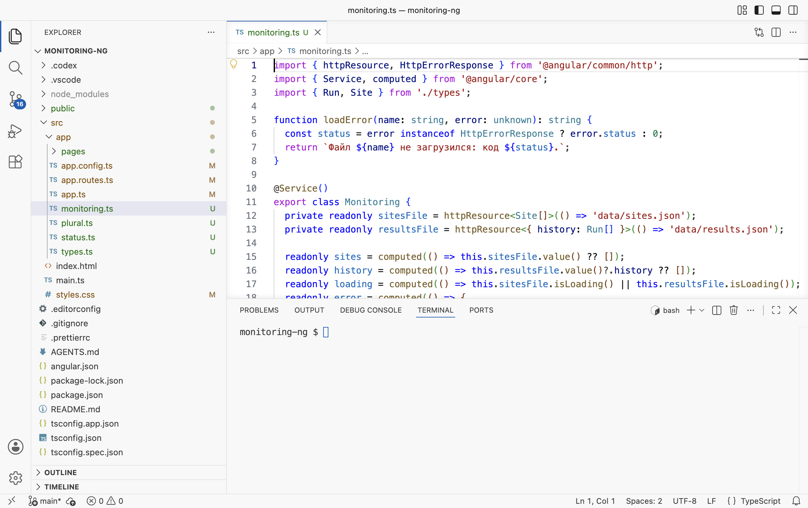
Служба Monitoring - 1
В React-версии загрузка данных занимала 72 строки в двух файлах, здесь — 27 строк в одном. Разница не в краткости записи: состояние загрузки и ошибки Angular хранит сам, внутри httpResource.
Служба готова. Страница возьмёт из неё данные и посчитает сводку.
§5Страница «Сайты»
ДелаемКласс компонента
- Создайте компонент
Создайте папку
src/app/pagesи в нейsites-page.ts.monitoring-ng/src/app/pages/sites-page.ts import { Component, computed, inject, signal } from '@angular/core'; import { RouterLink } from '@angular/router'; import { Monitoring } from '../monitoring'; import { sitesWord } from '../plural'; import { statusText } from '../status'; @Component({ selector: 'app-sites-page', imports: [RouterLink], templateUrl: './sites-page.html', }) export class SitesPage { protected readonly monitoring = inject(Monitoring); 1 protected readonly query = signal(''); 2 protected readonly onlyDown = signal(false); private readonly last = computed(() => this.monitoring.history()[0]); 3 protected readonly down = computed( () => this.monitoring.sites().filter((site) => !this.check(site.id)?.ok).length, ); protected readonly summary = computed(() => { 4 const count = this.monitoring.sites().length; if (this.last() === undefined) { return 'Проверок ещё не было'; } if (this.down() > 0) { return `Не открываются: ${this.down()} из ${count}`; } return `Все ${count} ${sitesWord(count)} открываются`; }); protected readonly shown = computed(() => { 5 const text = this.query().trim().toLowerCase(); return this.monitoring .sites() .filter((site) => site.name.toLowerCase().includes(text)) .filter((site) => !this.onlyDown() || !this.check(site.id)?.ok); }); protected check(id: string) { 6 return this.last()?.checks.find((c) => c.id === id); } protected status(id: string) { return statusText(this.check(id)); } }
- 1
Страница получает службу.
protectedзначит: доступно классу и его шаблону, но не другим компонентам. - 2
Текст поиска и флажок — сигналы, как
useStateв React. Значение читают вызовомquery(), меняют —query.set(…). - 3
Последняя проверка вычисляется из истории.
- 4
Сводка — тот же текст и те же три случая, что в React-версии, со
sitesWordиз перенесённогоplural.ts. - 5
Показанные сайты: поиск без учёта регистра и флажок. Сводка по-прежнему считает все сайты.
- 6
Обычный метод класса: шаблон вызывает его для каждой карточки.
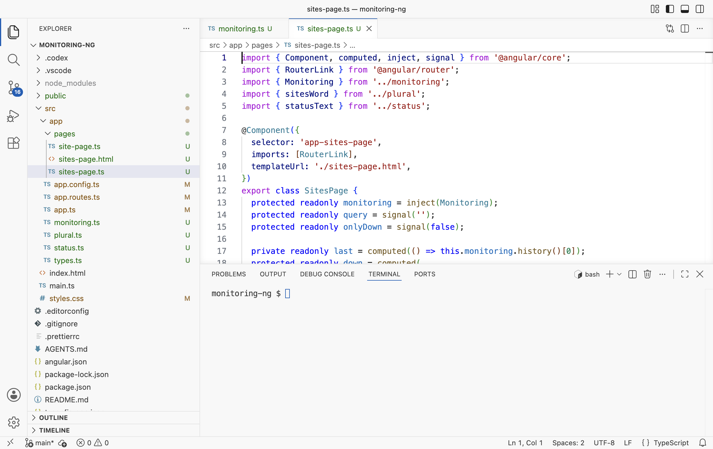
Класс страницы: сигналы и computed - 1
В React-версии shown и summary — обычные переменные: функция компонента вызывается при каждой отрисовке и считает их заново. В Angular класс создаётся один раз, поэтому вычисляемые значения записаны через computed. Angular помнит, какие сигналы прочитаны внутри computed, и пересчитывает значение, только когда они меняются. Правило из главы 0.2 соблюдено в обоих фреймворках: то, что вычисляется, в состояние не записывают.
ДелаемШаблон
- Создайте шаблон
Создайте рядом
sites-page.html.monitoring-ng/src/app/pages/sites-page.html @if (monitoring.loading()) { 1 <p class="empty" role="status">Загрузка результатов…</p> } @else if (monitoring.error()) { <p class="load-error" role="alert">{{ monitoring.error() }}</p> } @else { <p class="summary" [class.summary--bad]="down() > 0">{{ summary() }}</p> 2 <div class="filters"> <label> Поиск по названию <input type="search" [value]="query()" (input)="query.set($any($event.target).value)" /> 3 </label> <label> <input type="checkbox" [checked]="onlyDown()" (change)="onlyDown.set($any($event.target).checked)" /> Только неработающие </label> </div> @if (shown().length === 0) { 4 <p class="empty">Сайтов не найдено</p> } <div class="sites"> @for (site of shown(); track site.id) { 5 <a class="site" [class.site--bad]="!check(site.id)?.ok" [routerLink]="['/site', site.id]"> 6 <h2>{{ site.name }}</h2> <span class="site__status">{{ status(site.id) }}</span> <span class="site__url">{{ site.url }}</span> </a> } </div> }
- 1
@if,@else if,@else— три состояния страницы. В React то же делали два раннихreturn. - 2
[class.summary--bad]добавляет класс, когда выражение истинно. В React для этого собиралась строкаclassName. - 3
[value]передаёт значение в поле,(input)подписывается на ввод.$any(…)говорит проверке типов, что у цели события естьvalue. - 4
Строка «Сайтов не найдено» — тот же
@if. - 5
@forповторяет карточку для каждого сайта;track site.id— ключ, какkey={site.id}. - 6
[routerLink]превращает обычную ссылку<a>в переход внутри приложения, какLink. Массив['/site', site.id]собирает адрес/site/git. Для этогоRouterLinkуказан вimportsкомпонента.
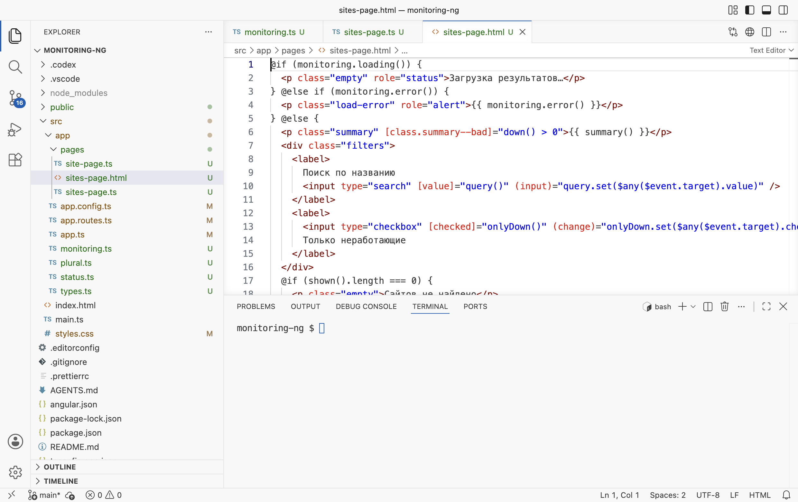
Шаблон страницы - 1
Одна карточка в двух записях
Строки стоят напротив: каждая строка слева делает то же, что строка справа.
На схеме карточка записана дважды, строки стоят одна напротив другой. В JSX всё — выражения JavaScript в фигурных скобках: map, тернарный оператор, шаблонная строка адреса. В шаблоне Angular у каждого действия свой знак. Квадратные скобки передают значение, круглые подписываются на событие, двойные фигурные выводят текст; @for и @if — встроенные блоки. Логика в шаблоне короче, но её приходится знать отдельно от TypeScript.
Страница готова, но её ещё не видно: её нужно поставить на маршрут.
§6Маршруты и запуск
ДелаемМаршруты, настройки, корневой компонент
- Страница сайта
Создайте
src/app/pages/site-page.ts— короткую страницу с названием и адресом сайта. Шаблон записан прямо в декораторе: для маленьких компонентов так советуетAGENTS.md.monitoring-ng/src/app/pages/site-page.ts import { Component, computed, inject, input } from '@angular/core'; import { RouterLink } from '@angular/router'; import { Monitoring } from '../monitoring'; @Component({ selector: 'app-site-page', imports: [RouterLink], template: ` <a routerLink="/" class="back">← Все сайты</a> @if (site(); as site) { <h2>{{ site.name }}</h2> <p><a [href]="site.url" target="_blank" rel="noreferrer">{{ site.url }}</a></p> } @else if (!monitoring.loading()) { <p class="empty">Сайта «{{ id() }}» нет в списке.</p> } `, }) export class SitePage { protected readonly monitoring = inject(Monitoring); readonly id = input.required<string>(); protected readonly site = computed(() => this.monitoring.sites().find((s) => s.id === this.id())); }
input.required<string>()— входное значение компонента, как свойство в React. Маршрутизатор передаёт в него часть адреса:id, если это включено в настройках. - Маршруты
Замените
src/app/app.routes.ts.monitoring-ng/src/app/app.routes.ts import { Routes } from '@angular/router'; import { SitePage } from './pages/site-page'; import { SitesPage } from './pages/sites-page'; export const routes: Routes = [ { path: '', component: SitesPage, title: 'Сайты · Мониторинг сайтов группы' }, { path: 'site/:id', component: SitePage, title: 'Сайт · Мониторинг сайтов группы' }, ];
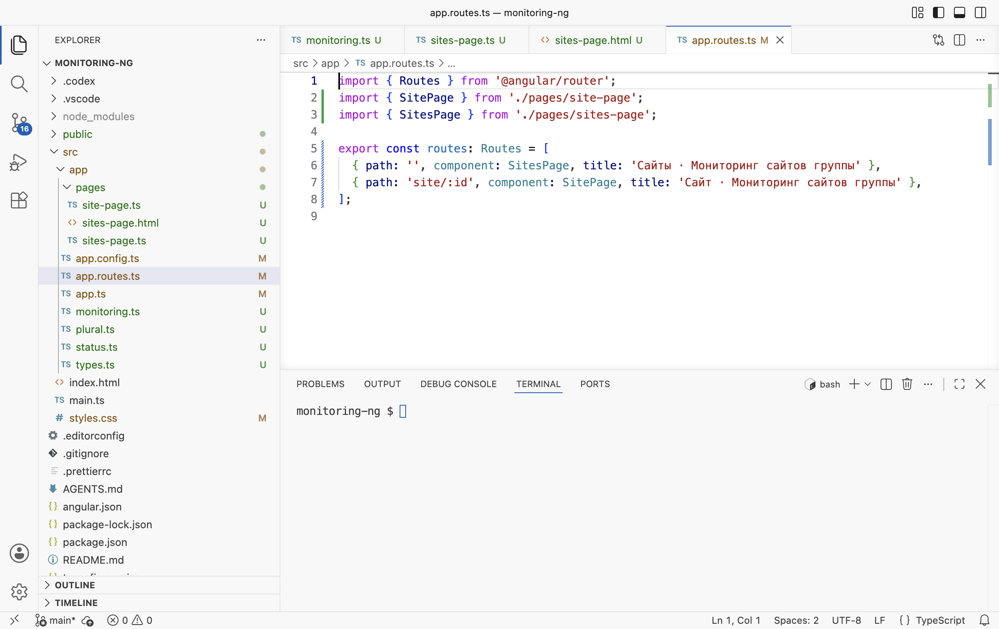
Маршруты с заголовками вкладок Заголовок вкладки — свойство
titleмаршрута. Маршрутизатор Angular сам ставит его при переходе; в React 19 для этого служил тег<title>в каждом компоненте страницы. - Настройки
Замените
src/app/app.config.ts.monitoring-ng/src/app/app.config.ts import { ApplicationConfig, provideBrowserGlobalErrorListeners } from '@angular/core'; import { provideHttpClient } from '@angular/common/http'; import { provideRouter, withComponentInputBinding } from '@angular/router'; import { routes } from './app.routes'; export const appConfig: ApplicationConfig = { providers: [ provideBrowserGlobalErrorListeners(), provideHttpClient(), provideRouter(routes, withComponentInputBinding()), ], };
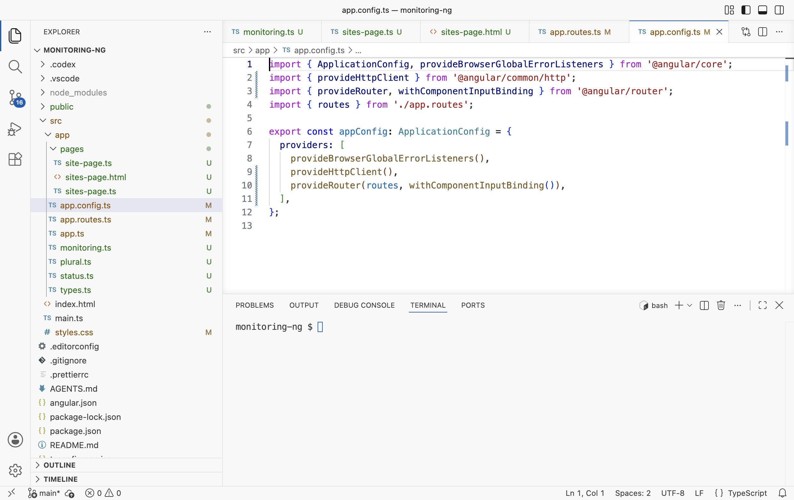
Настройки приложения provideHttpClient()подключает модуль работы с сетью, которым пользуетсяhttpResource.withComponentInputBinding()разрешает передавать части адреса во входные значения страниц. - Корневой компонент
Замените
src/app/app.ts: шапка со строкой о последней проверке и место для страницы —<router-outlet />, как<Routes>вApp.tsx.monitoring-ng/src/app/app.ts import { Component, computed, inject } from '@angular/core'; import { RouterOutlet } from '@angular/router'; import { Monitoring } from './monitoring'; @Component({ selector: 'app-root', imports: [RouterOutlet], template: ` <header class="header"> <h1>Мониторинг сайтов группы</h1> <p>{{ lastCheck() }}</p> </header> <main class="main"> <router-outlet /> </main> `, }) export class App { private readonly monitoring = inject(Monitoring); protected readonly lastCheck = computed(() => { const last = this.monitoring.history()[0]; return last === undefined ? 'Проверок ещё не было' : `Последняя проверка: ${new Date(last.time).toLocaleString('ru')}`; }); }
- Запустите
Терминал · папка monitoring-ng npm start
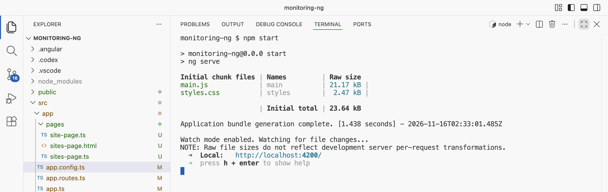
Сервер разработки на порту 4200 npm startвызываетng serve— сервер разработки, какnpm run devу Vite. Адрес —http://localhost:4200/. - Проверьте в браузере
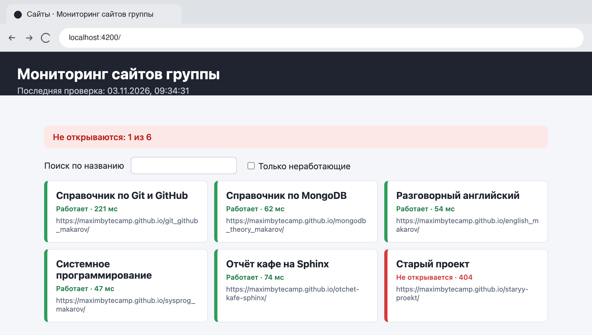
Страница «Сайты» на Angular Введите в поиск «справ».
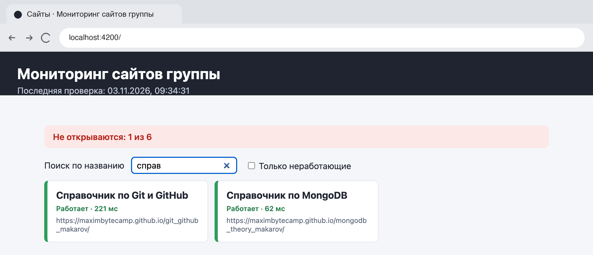
Поиск «справ» Щёлкните карточку: адрес и заголовок вкладки меняются.
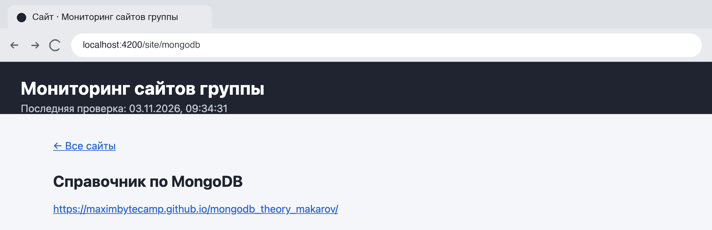
Страница сайта: адрес и заголовок вкладки сменились
Страница выглядит так же, как React-версия: те же классы и тот же styles.css. Сводка «Не открываются: 1 из 6» совпадает: её считает та же логика на тех же данных.
Поведение совпадает на глаз. Закрепим его тестом.
§7Тест страницы
РазбираемсяTestBed и подмена службы
В главе 4.1 тест показывал компонент функцией render из Testing Library и передавал придуманные данные через MonitoringContext. В Angular компонент для теста создаёт TestBed — тестовая сборка приложения. В ней службу можно подменить: вместо настоящей Monitoring, которая загружает файлы, страница получит объект с теми же сигналами и придуманными данными.
ДелаемПишем тест
- Создайте тест
Создайте
src/app/pages/sites-page.spec.ts. В Angular файлы тестов оканчиваются на.spec.ts.monitoring-ng/src/app/pages/sites-page.spec.ts import { signal } from '@angular/core'; import { TestBed } from '@angular/core/testing'; import { provideRouter } from '@angular/router'; import { Monitoring } from '../monitoring'; import { Run, Site } from '../types'; import { SitesPage } from './sites-page'; const sites: Site[] = [ { id: 'git', name: 'Справочник по Git', url: 'https://example.org/git/' }, { id: 'react', name: 'Справочник по React', url: 'https://example.org/react/' }, { id: 'sql', name: 'Задачник по SQL', url: 'https://example.org/sql/' }, ]; const run: Run = { time: '2026-11-12T21:00:00Z', checks: [ { id: 'git', ok: true, status: 200, ms: 340, error: '' }, { id: 'react', ok: false, status: 404, ms: 120, error: '' }, { id: 'sql', ok: true, status: 200, ms: 510, error: '' }, ], }; async function show() { const fake = { 1 sites: signal(sites), history: signal([run]), loading: signal(false), error: signal(''), }; TestBed.configureTestingModule({ providers: [provideRouter([]), { provide: Monitoring, useValue: fake }], 2 }); const fixture = TestBed.createComponent(SitesPage); 3 await fixture.whenStable(); 4 return fixture; } function names(page: HTMLElement) { return [...page.querySelectorAll('h2')].map((h) => h.textContent); } describe('SitesPage', () => { it('считает сайты, которые не открываются', async () => { const fixture = await show(); const page: HTMLElement = fixture.nativeElement; expect(page.querySelector('.summary')?.textContent).toBe('Не открываются: 1 из 3'); }); it('карточка ведёт на страницу сайта', async () => { const fixture = await show(); const page: HTMLElement = fixture.nativeElement; const link = page.querySelectorAll('a.site')[1]; expect(link.getAttribute('href')).toBe('/site/react'); }); it('поиск оставляет одну карточку', async () => { const fixture = await show(); const page: HTMLElement = fixture.nativeElement; const input = page.querySelector<HTMLInputElement>('input[type=search]')!; input.value = 'react'; input.dispatchEvent(new Event('input')); 5 await fixture.whenStable(); expect(names(page)).toEqual(['Справочник по React']); }); it('поиск git с флажком: сайтов не найдено', async () => { const fixture = await show(); const page: HTMLElement = fixture.nativeElement; const input = page.querySelector<HTMLInputElement>('input[type=search]')!; input.value = 'git'; input.dispatchEvent(new Event('input')); page.querySelector<HTMLInputElement>('input[type=checkbox]')!.click(); await fixture.whenStable(); expect(names(page)).toEqual([]); expect(page.textContent).toContain('Сайтов не найдено'); }); });
- 1
Подменная служба: те же четыре сигнала, что у настоящей, с данными из теста 4.1 — три сайта и одна проверка.
- 2
{ provide: Monitoring, useValue: fake }— когда страница попроситMonitoring, отдатьfake.provideRouter([])нужен ссылкам[routerLink], какMemoryRouterв React. - 3
TestBed создаёт страницу.
- 4
whenStable()ждёт, пока Angular обновит разметку. - 5
Ввод текста: значение поля и событие
input, на которое подписан шаблон. После него сноваwhenStable().
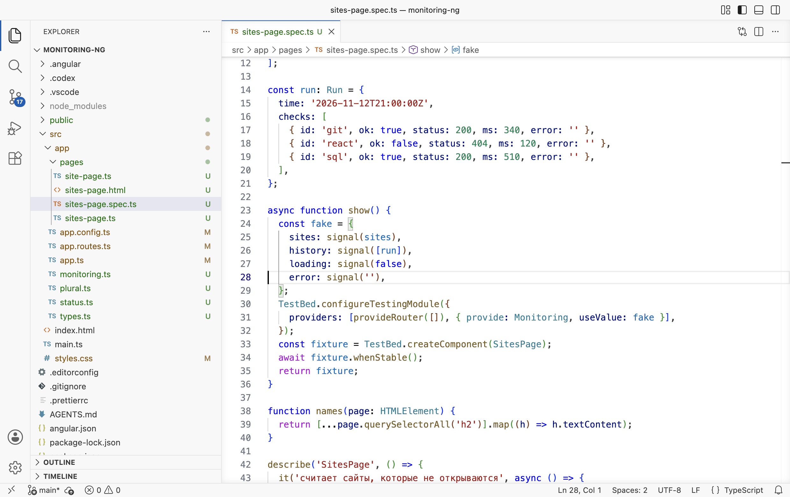
Тест: подменная служба - 1
- Запустите
Терминал · папка monitoring-ng CI=true npm test
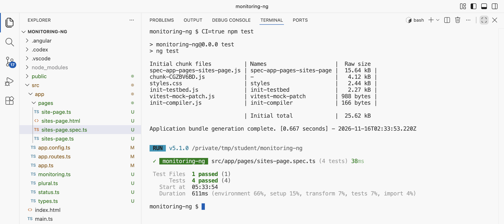
Четыре теста прошли ng testсначала собирает тесты своей сборкой, затем запускает их в Vitest 5.1 — той же версии, что в главе 4.1. БезCI=trueVitest остаётся в режиме наблюдения.
Тесты проверяют те же требования, что тесты страницы в главе 4.1: сводку, адрес ссылки, поиск и пустой результат. Элементы здесь ищутся через querySelector по классам и тегам. Testing Library есть и для Angular, и с ней тесты двух версий были бы ещё ближе, но в проект её нужно ставить отдельно.
Последнее — собрать проект и сравнить две версии.
§8Сборка и сравнение по числам
- Соберите проект
Терминал · папка monitoring-ng npm run build
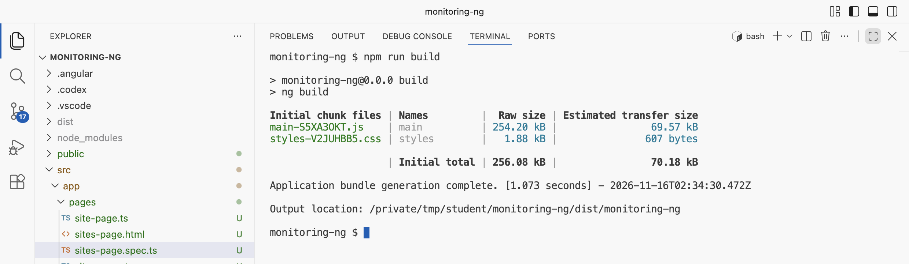
Сборка: 256 КБ, 70 КБ при передаче Готовый сайт лежит в
dist/monitoring-ng/browser. Его, как иdistу Vite, можно опубликовать на GitHub Pages.
| Что сравниваем | React (monitoring) | Angular (monitoring-ng) |
|---|---|---|
| Загрузка данных | 72 строки: MonitoringProvider.tsx и monitoring.ts | 27 строк: monitoring.ts |
| Страница «Сайты» | 74 строки: SitesPage.tsx | 75 строк: 46 в классе и 29 в шаблоне |
| Файл сборки | 262 КБ, 83 КБ при передаче | 254 КБ, 70 КБ при передаче |
Папка node_modules | 124 МБ, 87 папок верхнего уровня | 287 МБ, 200 папок верхнего уровня |
Цифры получены на двух проектах этого справочника. Сборки сравнимы только по порядку величины: в React-версии больше страниц — история проверок, «О проверке», страница 404, — а в Angular-версии только две. Строки страницы почти равны: Angular разносит её на класс и шаблон, React держит всё в одной функции. Короче всего в Angular вышла загрузка данных — за счёт httpResource. Больше всего места Angular занимает на диске: CLI сразу ставит сборщик, тесты и инструменты, которые в проекте Vite добавлялись по одному.
Из сравнения не следует, что один фреймворк лучше. Таблица в главе 0.2 называет, где каждый встречается чаще. На этой странице видно другое: задача, данные и логика переносятся, а меняется способ записи — хуки и JSX против сигналов, служб и шаблона.
§9Частые ошибки
Сообщения получены на проекте monitoring-ng.
| Что видно | Почему | Что сделать |
|---|---|---|
NG8002: Can't bind to 'routerLink' since it isn't a known property of 'a' | RouterLink не указан в imports компонента | Добавить imports: [RouterLink] и импорт из @angular/router |
NG8109: summary is a function and should be invoked: summary() при сборке | Сигнал в шаблоне записан без скобок | Читать сигнал вызовом: {{ summary() }} |
| CLI ждёт ответа: Would you like to share pseudonymous usage data | Первый запуск ng на компьютере | Ответить N и Enter |
| Тест не видит изменений после ввода | Не дождались обновления разметки | await fixture.whenStable() после события |
§10Проверьте себя
Какие файлы React-проекта перешли в Angular без изменений и почему?
types.ts, status.ts, plural.ts, данные и стили. Функции в них получают значения и возвращают результат, не обращаясь к фреймворку.
Чем служба в Angular отличается от провайдера с контекстом в React?
Провайдер стоит в дереве компонентов, и данные получают только компоненты внутри него. Службу Angular создаёт один раз отдельно от дерева и отдаёт её каждому, кто вызвал inject.
Почему в Angular сводка записана через computed, а в React — обычной переменной?
Функция компонента React вызывается при каждой отрисовке и считает переменную заново. Класс Angular создаётся один раз, и пересчёт при изменении данных обеспечивает computed.
Что делает track site.id в @for?
Задаёт ключ элемента списка, как key в React. По нему Angular понимает, какая карточка какая, когда список меняется.
Как тест Angular подменяет загрузку данных?
В TestBed для Monitoring указан useValue — объект с теми же сигналами и придуманными данными. Страница получает его вместо настоящей службы.
Что в проекте Angular делает файл AGENTS.md и откуда он взялся?
Его создал CLI по ключу --ai-config. В нём правила Angular для ИИ-агента: сигналы, встроенные блоки шаблонов, inject, доступность. Continue из главы 4.3 добавит их к каждому запросу.
Шпаргалка
npx @angular/cli@22.2.7 new имя --defaults --style=css --ssr=falsenpm start, CI=true npm test, npm run build@Component({ selector, imports, templateUrl })signal(''), чтение query(), запись query.set(…)computed(() => …)@Service() export class …, получить — inject(…)httpResource<T>(() => 'data/file.json'): value(), isLoading(), error()@if, @for (x of list(); track x.id), [свойство], (событие), {{ значение }}[routerLink]="['/site', id]"; title в маршрутеИтог главы
- Проект Angular создаёт CLI командой
ng new: маршрутизатор, сеть, формы и тесты на Vitest ставятся сразу, ключ--ai-configдобавляетAGENTS.mdс правилами Angular. - Функции без обращений к фреймворку, данные и стили перенесены копированием.
- Провайдер с эффектом и контекстом заменила служба
@Service()сhttpResource; страница получает её черезinject. - Состояние страницы — сигналы, сводка и список —
computed, разметка — шаблон с@if,@forи[routerLink]; заголовки вкладок —titleв маршрутах. - Тест создаёт страницу через
TestBedс подменённой службой и запускается в Vitest. По числам: загрузка данных короче, страница той же длины, сборка того же размера,node_modulesвдвое больше.
Источники
- Angular — CLI Overview and Command Reference
- Angular — Signals
- Angular — httpResource
- Angular — Dependency injection
- Angular — Control flow (@if, @for)
- Angular — Routing (title)
- Angular — Testing
- Angular — Develop with AI (правила для агентов)